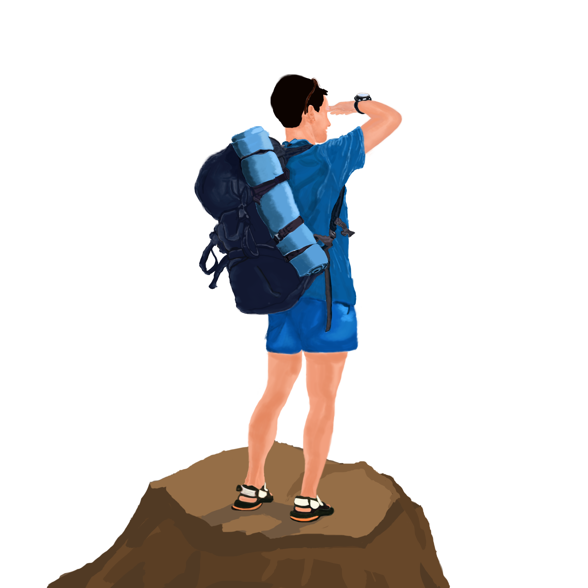
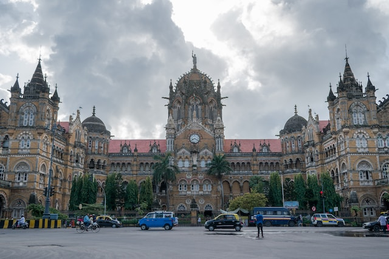
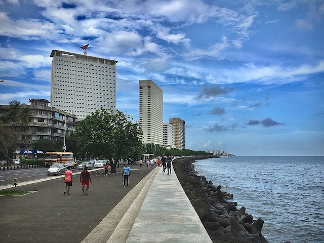
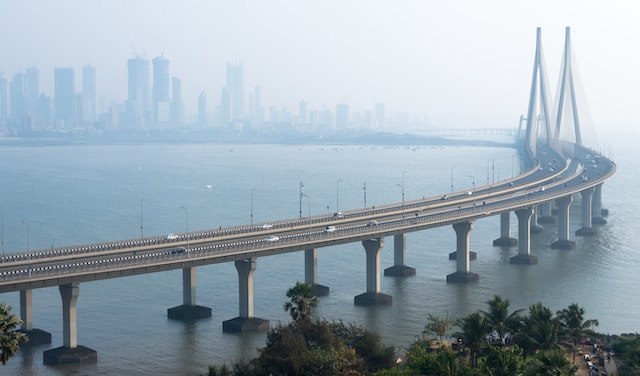

TRAVEL VLOG
Mumbai
Mumbai, often referred to as the "City of Dreams," is a bustling metropolis located on the western coast of
India. As the financial, commercial, and entertainment capital of the country, Mumbai is a melting pot of
diverse cultures, languages, and traditions. The city is known for its iconic landmarks like the Gateway of
India, Marine Drive, and the majestic Taj Mahal Palace Hotel. Mumbai is also home to the vibrant Bollywood film
industry, which produces a significant portion of India's movies. The city's energy is palpable, with its
bustling streets, crowded local trains, and a dynamic street food scene offering a myriad of flavors. Despite
its fast-paced lifestyle, Mumbai is also home to serene beaches, historical sites, and lush green spaces like
the famous Sanjay Gandhi National Park. The resilient spirit of Mumbaikars, their indomitable enthusiasm, and
the seamless coexistence of old and new make Mumbai a captivating and unforgettable destination.



Kashmir
Kashmir, located in the northernmost part of the Indian subcontinent, is a region known for its breathtaking
natural beauty, rich cultural heritage, and complex political history. Nestled in the Himalayan mountains, it is
often referred to as the "Paradise on Earth" due to its picturesque landscapes, including snow-capped peaks,
lush valleys, and serene lakes. However, Kashmir has also been a subject of dispute between India, Pakistan, and
China, with each country claiming parts of the region. This longstanding territorial conflict has resulted in
tensions, occasional violence, and an increased military presence. Despite the challenges, Kashmir remains a
place of immense allure, drawing tourists from around the world who are captivated by its unmatched beauty and
the warm hospitality of its people. The desire for peace and stability in Kashmir persists, as it strives to
fulfill its true potential as a beacon of tranquility and a symbol of coexistence.
Kolkata
Kolkata, the vibrant capital city of the Indian state of West Bengal, is a cultural hub that blends rich heritage
with modern aspirations. Known as the "City of Joy," Kolkata exudes a unique charm that captivates both locals
and visitors alike. Steeped in history, it boasts magnificent colonial architecture, bustling marketplaces, and
grand old mansions that hark back to its colonial past. The city's soul lies in its bustling streets, where
trams weave through a maze of yellow taxis, rickshaws, and people going about their daily lives. Kolkata is
renowned for its literary and artistic contributions, with iconic figures such as Rabindranath Tagore and
Satyajit Ray emerging from its vibrant cultural scene. From the majestic Howrah Bridge to the serene banks of
the Hooghly River, Kolkata offers a delightful tapestry of experiences, ranging from exploring its myriad of
temples, indulging in mouthwatering street food, or witnessing the fervor of its Durga Puja celebrations.
Kolkata is a city that leaves an indelible mark on the hearts of those who visit, immersing them in its timeless
beauty and warm hospitality.